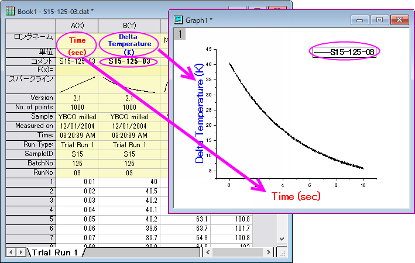
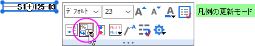
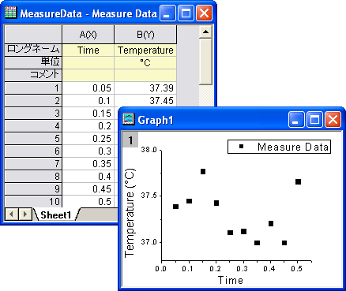

FAQ-154 デフォルトで表示される軸タイトルや凡例を編集するには?
Customize-AxisTitle
最終更新日：2024/01/08
軸タイトルまたは凡例のテキストをカスタマイズする方法はいくつかありますが、通常、下図のようにワークシートにある列ラベル行データなどのメタデータを利用するのが最善の解決策です。
- 
デフォルトでは、折れ線グラフテンプレートは、次のラベル行データを使用するように構成されています。
- X軸のタイトルは、X列のロングネーム+単位、つまり、「Time(sec)」になります。
- Y軸のタイトルは、Y列のロングネーム+単位つまり、「Delta Temperature(K)」になります。
- グラフの凡例は、Y列のコメント、つまり、「S32-014-04」になります。
デフォルトのテンプレート設定を変更したい場合は、グラフテンプレートにカスタム設定を保存すれば可能です。下記をご参照ください。
- グラフの軸タイトルと凡例は、LabTalk置換を使用して、プロジェクト変数からテキストを生成します。
- 2DグラフのデフォルトのX軸タイトルは、%(?X)表記となり、 Y軸のタイトルは%(?Y)となります。この表記はソース列の名前（使用可能な場合はロングネーム、そうでない場合はショートネーム）にリンクされており、作図の詳細> 凡例/タイトルタブから単位を付ける(可能なら)...チェックボックスをオンにすることで、ラベル行の単位と組み合わせることができます。（下記の軸タイトルの単位表示のカスタマイズを参照してください）。
- デフォルトの凡例テキストは、作図の詳細>凡例/タイトルタブから、%(1), %(2)の解釈モードドロップダウンで「カスタム」などの他のラベル行データを使用することで変更できます。Origin 2021以降では、凡例オブジェクトをクリックし、ミニツールバーの凡例の更新モードボタンを使用して、ラベル行のソースを選択できます。
- 
.
軸のタイトルと凡例のテキストをハードコーディングする
場合によっては、軸のタイトルまたは凡例のテキストを直接入力することを選択できます。これは、データファイルに有用なメタデータが含まれていない場合でも必要になる場合があります。
- 軸のタイトルまたは凡例のテキストをダブルクリックして、既存の変数表記を文字テキストで上書きします。凡例テキストのインプレース編集は作業が大変なため、代わりに、凡例の プロパティダイアログでテキストを編集できます。
- ワークシートのメタデータを組み込んだ軸のタイトルと凡例のテキストと同様に、「ハードコードディングされた」テキストをテンプレートと共に保存できます。
Origin.iniファイルでデフォルトの軸タイトルと凡例をカスタマイズする
軸のタイトルと凡例のテキストをカスタマイズするためのさらに別のオプションは、ユーザファイルフォルダ内のOrigin.iniファイルを編集することです。
- Originを閉じます。
- ユーザファイルフォルダ内にあるOrigin.iniファイルを見つけます。（通常はC:\Users\user\Documents\OriginLab\User Filesにあります。そこに見つからない場合は、Originを実行してスクリプトウィンドウ「ウィンドウ: スクリプトウィンドウ」を開き、
%Y=と入力してEnterキーを押します。）
- Origin.iniファイルをテキストエディタ（メモ帳など）で開き、[Text]セクションを見つけます。
- 対応するXTitle =、YTitle =、およびLegend =の行を見つけて、=の後の部分を編集します。LabTalkの置換表記 を含む、任意のテキストにすることができます。Note: ; カスタマイズしたい場合は、XTitlte=、Y=Title=、および、Legend=の前の ; は削除されます。
たとえば、origin.iniの[Text]セクションに次の内容が含まれているとします。
[Text] ;ワークブックロングネームをデフォルトの凡例で使用 Legend=\L(%d) %%(%d,@WL)\r\n ;デフォルトのX軸タイトルは最初の独立データセットのロングネーム XTitle=%%(1X, @LL) ;デフォルトのY軸タイトルは最初の独立データセットのロングネーム+単位 YTitle=%%(1Y, @LG)
次のスクリーンショットに示すワークブックの列Bからデフォルトの散布図を作成したグラフが右側のものです。
- 
ワークブックのロングネームは"Measured Data"です。凡例ボックスに表示されます。X列のロングネーム（ "Time"）はX軸のタイトルに使用されます。Y軸のタイトルは、Y列のロングネーム（ "Temperature"）と単位（ "oc"）です。
軸タイトルの単位表示のカスタマイズ
これは、Origin 2016以降のバージョンに適用されます。
軸タイトルでの単位の表示方法を変更するには、次の手順に従います。
- Originメニューから、環境設定：オプションを選びます。
- オプションダイアログで、軸タブをクリックし、軸タイトルの単位表示ボックスの隣にあるメニューボタンをクリックして、目的の表示オプションを選択します（例：/<U>に対して、ロングネーム(単位) の代わりにロングネーム / 単位）。
キーワード:オプション, 単位表示, 軸タイトル,置換表記,文字列置換, 特殊文字, グラフテンプレート,エスケープシーケンス